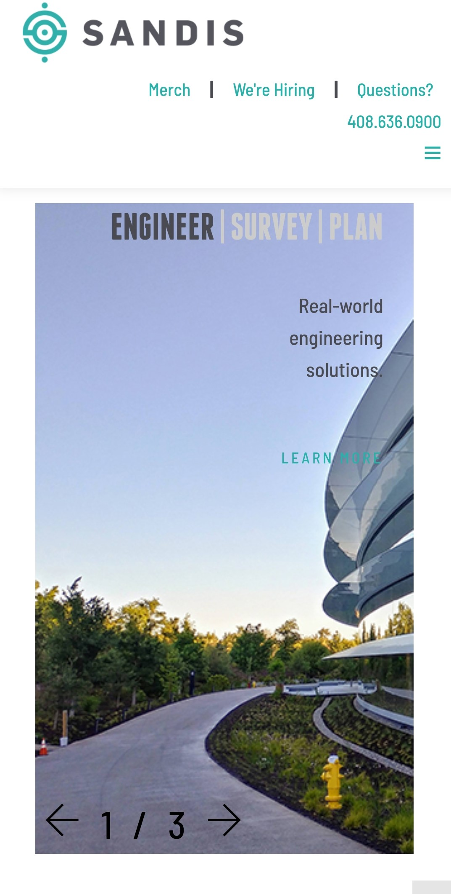
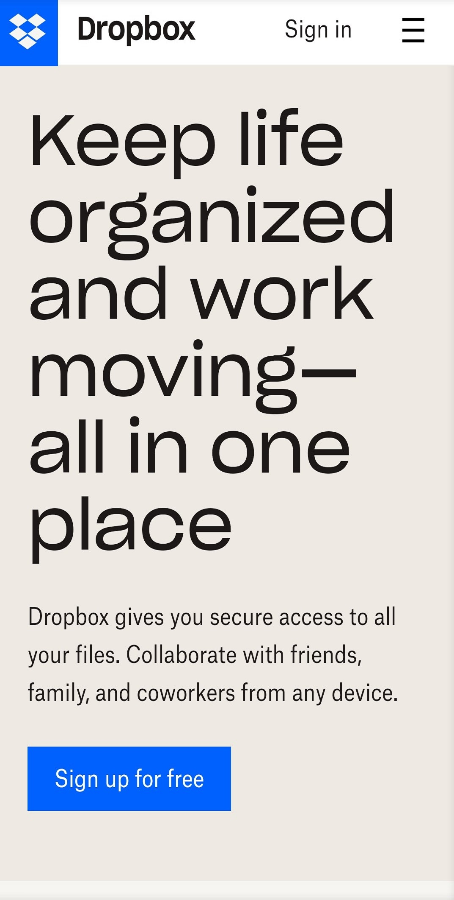
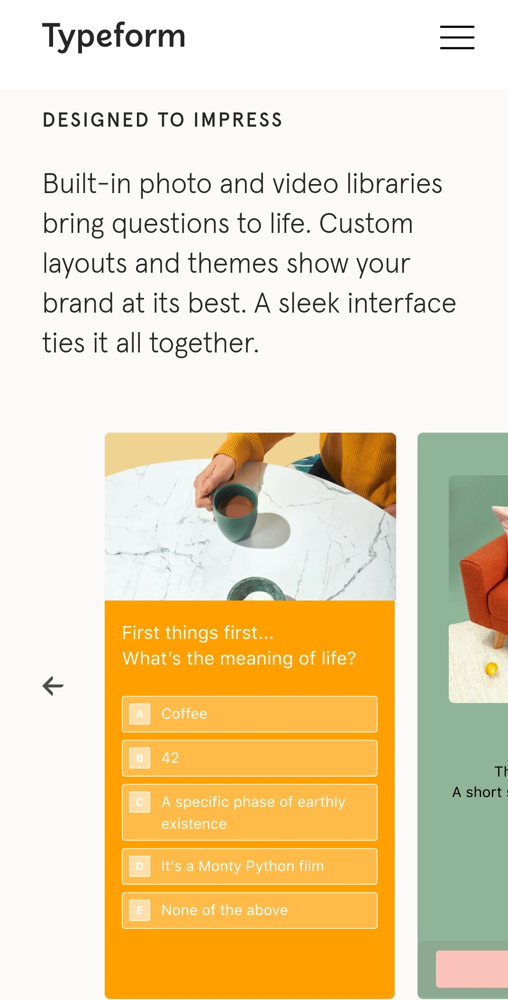

Rule of Thirds
Sandis
The first image that is displayed on the Sandis website demonstrates the Rule of Thirds. The reason that This image is able to catch a reader's attention is because of the emphasis that is placed on the sky. 2/3rds of the image are focused on the sky while the other 1/3 is focused on the ground. If the image had not been captured in 2/3rds, it would be less interesting.
White Space and Clean Design
Dropbox
As can be seen on the Dropbox website, there is plenty of space between the different elements on the page. The letters and elements are not too close together, and the text that is in the middle of boxes is not too close the edges. The Overall desing of the site is clean as well. None of the elements on the page look cluttered.
Alignment
Typeform
The Typeform website is able to get the reader's attention immediately as the text is formatted off the left of the page. This is also something that is noticeable on the others sections that are contained on the website. Having the text aligned on the left side of the screen also makes it easier to read.